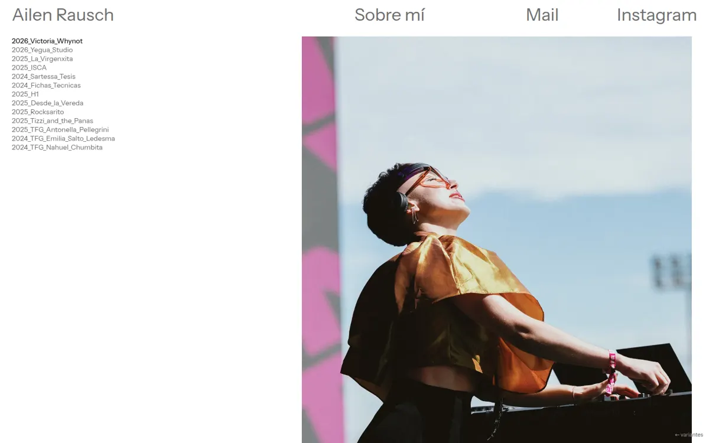
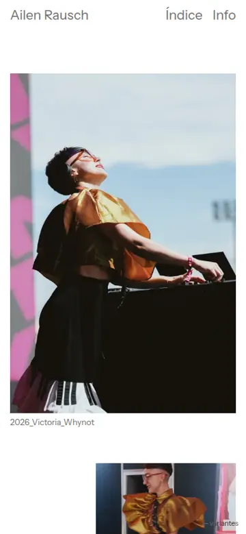
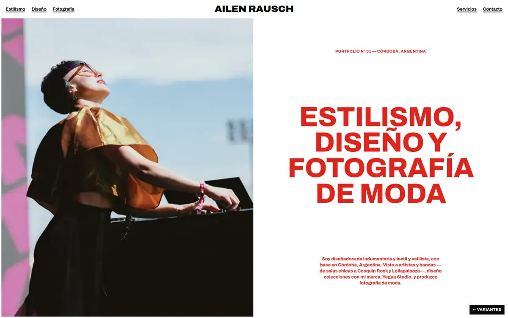
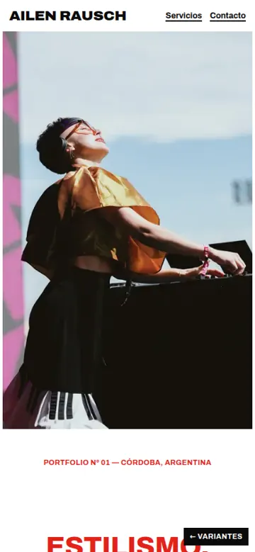
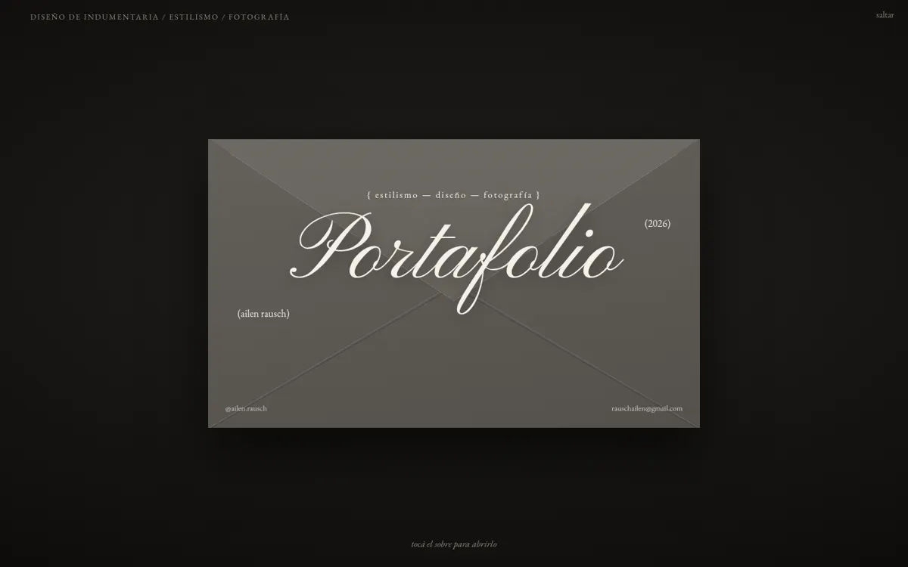
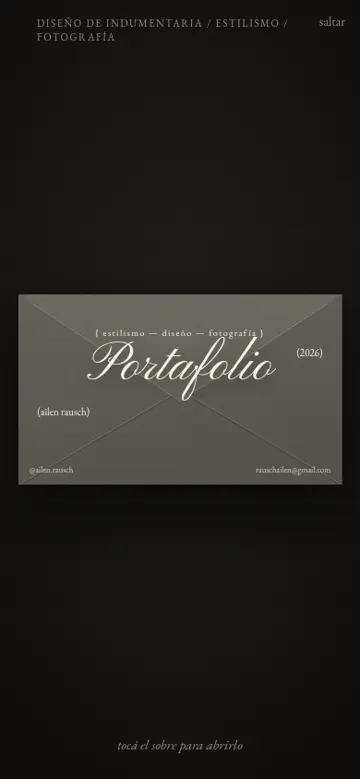

Ailen Rausch
tres variantes de web
Las tres usan el mismo material: 13 proyectos, unas 140 fotos y 9 clips de la carpeta de Drive de Ailen, con sus textos para cada trabajo. Lo que cambia es la forma de mostrarlo. Todas funcionan en celular.


Variante A
Índice
- Inspirada en
- Lou Vacquié, la web de ejemplo que mandó Ailen
- Cómo es
- Blanca, silenciosa. Índice fijo de proyectos «AÑO_Nombre», fotos sueltas de distintos tamaños y una ficha en tres columnas por proyecto.
- Va bien si
- quiere algo muy parecido a lo que eligió ella, donde el trabajo hable solo.
Abrir variante A →


Variante B
Revista
- Inspirada en
- 032c, la revista de moda y cultura de Berlín
- Cómo es
- Grilla de placas, grotesca negra muy pesada y titulares en rojo. Cada proyecto es una nota, y los servicios aparecen grandes y numerados.
- Va bien si
- la prioridad es que se entienda rápido qué hace y que la contraten. Es la que más vende servicios.
Abrir variante B →


Variante C
Campaña
- Inspirada en
- Paloma Wool (fotos a sangre, serif chica, nombre vertical) y Art Partner, la agencia de estilistas y fotógrafos (archivo en collage)
- Cómo es
- Oscura y cinematográfica. Arranca con un sobre que se abre al tocarlo, sigue con tres videos de Yegua Studio y cada proyecto se recorre como una tira de película. Cierra con los servicios como créditos y un «About me».
- Va bien si
- quiere la más impactante y la más alineada con su universo de cine.
Abrir variante C →
Falta definir con Ailen
- Año de H1, de la tesis (Sartessa) y de las fotos de Nahuel: no salieron de la metadata de los archivos.
- Créditos de fotografía de cada proyecto. Solo se conocen @gggonzalolopez (Lollapalooza) y Lucas Vidart (TFG de Antonella).
- Textos de servicios: los redactamos nosotros a partir de su material. La bio y los textos de cada proyecto son los suyos.
- La foto suya para el «About me» de la variante C (hoy hay un recuadro reservado).